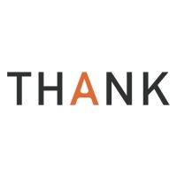

AI 科研机构 · AI Research
AI / 研究
智谱华章 · Synapse AI
EDGE Agentic Labs · KoreTech
EDGE Agentic Labs · KoreTech
国内企业 · Enterprise
Enterprise
蚂蚁集团 · 心动 XD · 字节跳动
腾讯 · 京东 · THANK Talent
腾讯 · 京东 · THANK Talent

创投基金 · Venture Capital
VC / PE
顺为资本 · 清新资本
NYX Ventures
NYX Ventures
海外团队 & 猎头 · Overseas
Global Teams / Agencies
SPM · Agrícola Campolor
Vivende Inmobiliaria
Vivende Inmobiliaria
合规声明：所列机构仅为平台注册、试用用户所属企业示例，不构成官方合作、客户签约、品牌背书。
| 产品/类别 | 核心能力 | 关键短板 |
|---|---|---|
领英LinkedIn |
职业社交档案，全球最大商业人脉网络 | 信息仅用户自主填写，无代码、论文、跨平台技术成果佐证 |
ExaSearch |
检索速度快，适合通用岗位初步筛选 | 仅返回网页链接，缺少人才智能分析、账号合并、信息核验能力 |
ExaWebsets |
AI 自动核验能力突出，英文、时效类检索效果优异 | 高度依赖领英数据，不支持文件上传，中文复杂需求匹配薄弱 |
PeopleGPTJuicebox |
通用海外人才工具 | 中文语义、地域识别、多条件逻辑推理存在明显缺陷 |
ATS ATS招聘系统 |
仅管理招聘流程 | 不具备人才挖掘、资料补全、技术能力评估、定制沟通文案能力 |
DINQAI Talent Search |
一站式 AI 人才搜索引擎，完整覆盖 Search / API Playground / Talent Radar / Shortlist / Integration / Page / Organization 全模块 | — |
01 · 全球顶级孵化器成员
AWS
02 · 顶尖人才入驻
DeepSeek
Qwen
OpenAI
Meta
03 · 行业媒体公开宣发
DINQ 面向全球发布 AI 原生职业人才平台官方新闻通稿，覆盖北美及全球财经、科技主流媒体分发渠道：
雅虎财经 · 美联社 · MarketWatch · 环球邮报 · TradingView · EQS 资讯 · Digital Journal · 国际商业时报
合规提示：所列机构仅为平台注册、试用用户所属企业示例，不构成官方合作、客户签约、品牌背书。
SG
高岱恒 Sam Gao
创始人 & CEO
中科大博士，前阿里达摩院研究员，开源社区知名贡献者。开源项目 DeepFaceLab 为 2020 GitHub 全球 Top2 项目（46K 点赞），Eliza OS 白皮书月度热度第一；运营 2 万+ 中文 AI 研究者社区。
KS
孙辰昕 Kelvin Sun
联合创始人
悉尼大学硕士，招聘基础设施赛道连续创业者。曾任职红杉资本、光源资本人力资源管理，深耕人才系统搭建、B2B SaaS 商业化规模化运营。
JL
陆坚 Jian Lu
战略顾问
达特茅斯博士，前领英中国区总裁、CGL 全球首席咨询合伙人；清华苏世民学院导师，拥有全球化人才市场战略视野与人脉资源。